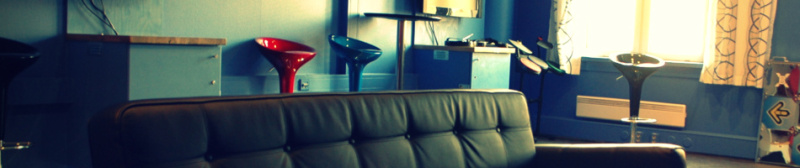

Spillrommet - Battlestation NITH - er tilgjengelig for studier og avkobling for studenter mandag til torsdag. Se informasjon under rundt bruken av rommet!

Utlån av nøkkelsett til spillrommet og konsollskapene skjer via biblioteket på samme måte som med bøker. (Husk at biblioteket stenger 15:00.)
Lånetiden er fra utlånstidspunkt til skolens stengetid.Innlevering skjer i boksen ved døren på spillrommet. NB! Ikke ta med nøkkelen hjem.For å få lånt nøkkelsett MÅ studentkort fremvises.Det er kun mulig å låne ett nøkkelsett pr person. (Ett sett gir tilgang til ett konsollskap.)
Den som blir registrert som låner av nøkkelsettet blir holdt ansvarlig for rommets innhold. I de fleste tilfeller vil det si: Konsoll, kontroller(e), spill og headsett (se liste i skapet). Skapenes innhold vil bli kontrollert.
Ved tap av materiell påløper erstatningsansvar etter faste satser.
Erstatningsbeløp:
- Spill: kr 500,-
- Kontroller: kr 500,-
- Headsett: kr 400,-
- Konsoll: kr 4000,-
Biblioteket forbeholder seg retten til å endre satsene på erstatningsbeløp på spesielle gjenstander.Låntaker som ikke overholder utlånsreglene, kan bli nektet framtidige lån.Fredager/over helgen er rommet reservert for grupper og utvalg.Rommet kan reserveres for spesielle arrangementer. Kontakt biblioteket!